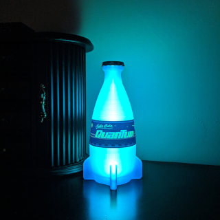

NUKA-COLA QUANTUM

YOU WILL NEED:
- 1 cup water
- 2 cups sugar
- Zest and juice of 1 lemon
- Zest and juice of 1 lime
- 2 tablespoons fruit punch
- 2 tablepoons pomegranate juice
- 1 teaspoon citric acid
- 5 drops neon blue food dye
TO MAKE NUKA-COLA QUANTUM SYRUP
- Combine the water, sugar, lemon zest, lime zest, fruit punch, and pomegranate
juice in a medium saucepan and place over medium-high heat. Whish until the sugar
has dissolved and then bring to a boil. Reduce the heat to low and simmer for 10 minutes.
- Remove from the heat and strain into an airtight container. Add the lime and lemon juice.
Mix in the citric acid and food dye. Once cooled, cover and store in refrigerator for at least
12 hours and up to 2 weeks.
TO MAKE AN ICE-COLD GLASS OF NUKA-COLA QUANTUM:
- Combine the 1 cup seltyer water, ice, and 9 tablespoons of Nuka-Cola Quantum syrup, then stir together.
RETURN TO TOP
RETURN TO RECIPE LIST